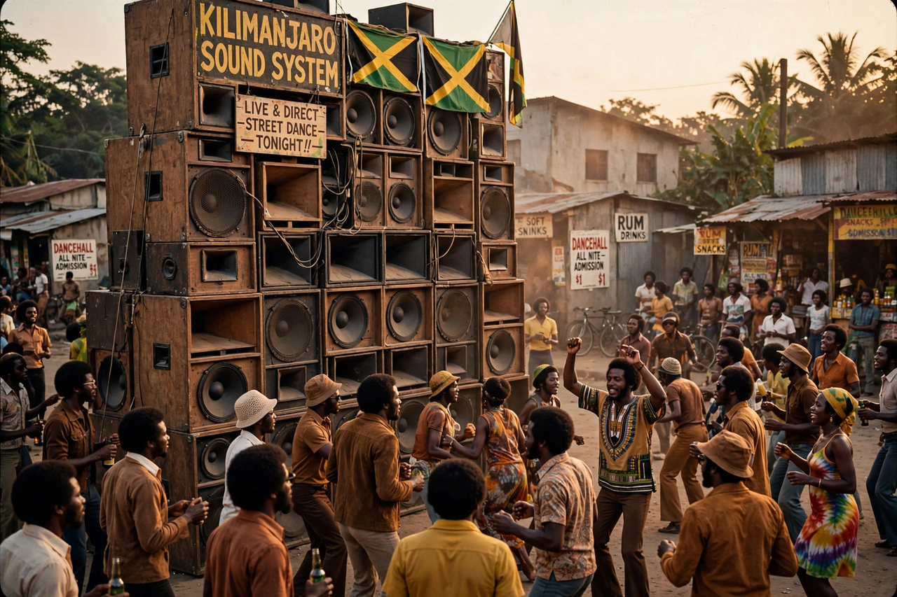

| Sound system | |
|---|---|
 | |
| Origin | Kingston, Jamaica |
| Era | 1950s–present |
| Key figures | Tom the Great Sebastian, Duke Reid, Clement "Coxsone" Dodd, King Tubby |
| Genres | Mento, ska, rocksteady, reggae, dub, dancehall |
A Jamaican sound system is a group of disc jockeys, engineers and MCs playing ska, rocksteady, reggae, dub and dancehall music. The sound system is an important part of Jamaican culture and history, and the concept originated in the ghettos of Kingston in the 1950s, where entrepreneurs built powerful mobile speaker stacks to play American rhythm and blues records at outdoor dances.
Sound system operators such as Tom the Great Sebastian, Duke Reid ("the Trojan") and Clement "Sir Coxsone" Dodd competed fiercely for audiences and exclusive records. Their rivalry drove the development of a domestic recording industry: when American R&B fell out of fashion, operators began recording local musicians, giving rise to ska and, later, reggae. The MC (or deejay) who "toasted" over records became a performer in his own right, a practice that strongly influenced the development of hip hop in the United States through Jamaican-born DJ Kool Herc.
The first sound systems emerged after the Second World War, playing American R&B imported by merchants and returning migrant workers. By the mid-1950s sounds such as Tom the Great Sebastian's were drawing crowds of thousands. Duke Reid and Coxsone Dodd established the Trojan and Studio One operations respectively, founding record labels that recorded artists including the Skatalites, Bob Marley and the Wailers.
In the 1970s, engineer and producer King Tubby revolutionised the sound system by building his own amplifiers and pioneering dub — remixing records with echo, reverb and drops in the bass line. Sound systems also spread with the Jamaican diaspora to the United Kingdom, where they shaped British music from lovers rock to jungle and grime.
A central feature of sound system culture is the sound clash, in which two systems compete before a crowd, alternating records and exclusive "dubplate" specials recorded by artists praising their sound. Clashes reward the loudest, clearest "set" (speaker stack), the deepest selection of exclusive recordings and the sharpest MC.
Reggae · Dub music · Dancehall · Toasting · Studio One
From Wikipedia, the free encyclopedia (recreated from memory).